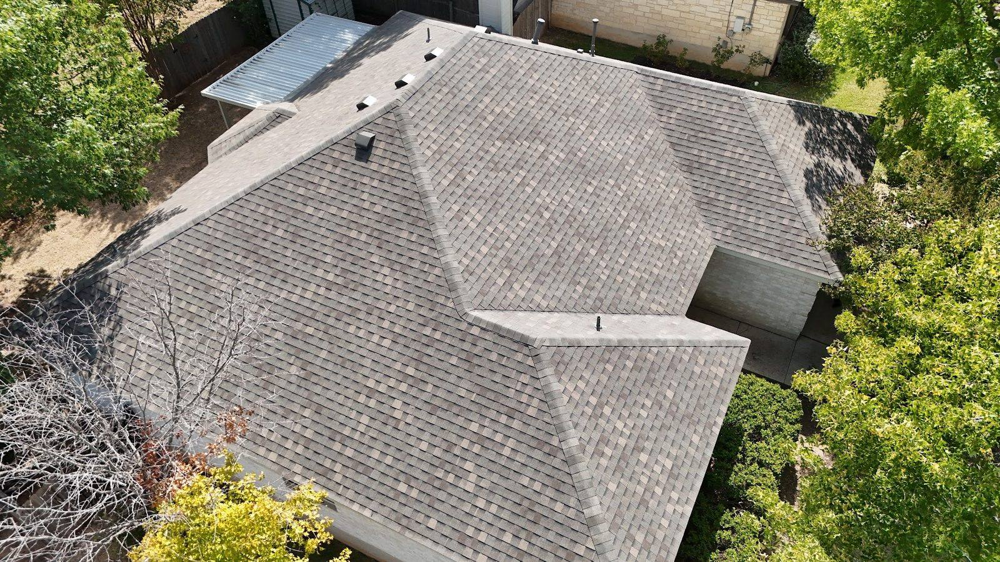

Roofing contractor · Kyle, TX
Leaks found. Roofs done right.
We find the leak, show you photos, and test the repair.
What is your roof doing?

5.0★★★★★8 Google reviews
Show the problem. Fix it. Test it.
Photos, a plain explanation, then a fix tested with water.
Leak after a storm? Call and we will come look.
Treatments
Your roof plan
Replacements, leak repair, patching and flat roofs, plus help with insurance claims.
Roof replacement
A full new roof, with help working through an insurance claim, even after a denial.
- New shingles
- Insurance claim help
- Clear updates

Leak repair
Find the real source, fix it, then run a hose over the repair to confirm.
- Leak detection
- Added flashing
- Hose-tested

Patching and flat roofs
Quick patches ahead of the rain and repairs for flat roof sections that were installed wrong.
- Roof patching
- Flat roof repair
- Photos of the problem

Out and about
On the roof


Reviews
What homeowners say
5.0 · 8 Google reviews
⭐⭐⭐⭐⭐ I highly recommend Kyle Mozingo and Mom’s Roofing. I had a slow leak where part of my flat roof had been installed incorrectly. After several years and unsuccessful repairs by two other roofing companies, Mom’s Roofing finally found the problem and fixed it correctly. Kyle took photos, explained what had been installed improperly, and kept me informed throughout the entire process.
I had a roof leak from the heavy rain a few weeks ago, so I called Mom’s Roofing. Kyle came out the next day to inspect my roof, and a couple of days later he had a crew come out to address the issue. It took them a couple of hours to identify the source of the leak as it was a small leak, and they fixed it promptly.
I can’t say enough great things about my experience with Kyle Mozingo and Mom’s Roofing! They were incredibly helpful throughout the entire process of getting my roof replaced. My initial claim was denied by my insurance company but thanks to Kyle’s expertise in the appraisal process and dealing with roof denials and fighting insurance companies , they helped get my roof approved.
Kyle and his team did an amazing job when patching our roof. And just in time before all this crazy rain. Kyle made the process easy and it was very affordable. I’ve been referring him to everyone I know and will call him when it’s time to replace our roof. Or any roofing needs. Thanks Kyle!

About
A roofer who explains
Kyle Mozingo comes out, takes photos and talks you through the repair. We serve Kyle and nearby towns.
Hard leaks, flat roofs and denied insurance claims are all work we take on.
- ✓Finds the hard leaksStubborn flat-roof leaks found and fixed.
- ✓Tested, not guessedWe run a hose over the repair before we leave.
- ✓Clear communicationPhotos, plain explanations and updates at every step.
Find us
Serving Kyle and nearby
Kyle, TX
We come to you. Call to set up a roof inspection.
Hours
- Mon
- 7 AM–8 PM
- Tue
- 7 AM–8 PM
- Wed
- 7 AM–8 PM
- Thu
- 7 AM–8 PM
- Fri
- 7 AM–8 PM
- Sat
- 7 AM–8 PM
- Sun
- 7 AM–8 PM